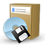

GNOME Installation
Zum Verständnis dieses Artikels sind folgende Seiten hilfreich:
 Das Nachinstallieren von GNOME 3 gestaltet sich relativ einfach. Drei Varianten, je nach Ausgangssituation und persönlichem Geschmack, sind möglich.
Außerdem gibt es seit Ubuntu 13.04 eine Ubuntu-Variante, die von Haus aus GNOME und nicht Unity verwendet: Ubuntu GNOME. Ubuntu GNOME lässt sich identisch wie Ubuntu installieren oder in Form einer Live-DVD testen. Der Download ist auf  http://ubuntugnome.org/
http://ubuntugnome.org/  möglich.
möglich.
Ubuntu GNOME¶
Installations-DVD¶
Die erste Variante ist, direkt Ubuntu GNOME herunterzuladen, das ISO-Abbild auf eine DVD zu brennen und von diesem Medium zu installieren. Eine detaillierte Installationsanleitung gibt es im Artikel Ubuntu-GNOME Installation.
Laufendes System¶
In diesem Fall wird bei einem bestehenden Ubuntu, Kubuntu, Xubuntu, Lubuntu oder von einer Minimalinstallation ausgehend zusätzlich ein Ubuntu GNOME installiert. Das benötigte Metapaket, das alle weiteren benötigten Pakete installiert [1], heißt:
ubuntu-gnome-desktop (ab Ubuntu 12.10, universe)
 mit apturl
mit apturl
Paketliste zum Kopieren:
sudo apt-get install ubuntu-gnome-desktop
sudo aptitude install ubuntu-gnome-desktop
Das bedeutet, dass neben der reinen Desktop Umgebung auch die Standardanwendungen mitinstalliert werden. Anschließend kann man bei der grafischen Anmeldung wählen, welche der installierten Desktop Umgebungen geladen werden soll.
GNOME¶
Möchte man hingegen nicht das komplette Ubuntu GNOME installieren, sondern nur GNOME auf einem bestehenden System ergänzen, dann hat man folgende beiden Möglichkeiten:
Das "echte" GNOME¶
Hierbei wird eine Standard-GNOME Desktop Umgebung ohne die Ubuntu-typischen Besonderheiten und ohne das "Artwork", aber mit zusätzlichen Anwendungen wie z.B. Evolution, GIMP, LibreOffice und Transmission, installiert. Für die Installation des allgemeinen GNOME benötigt man das Paket:
gnome (universe)
mit apturl
Paketliste zum Kopieren:
sudo apt-get install gnome
sudo aptitude install gnome
Das minimale GNOME¶
Wenn man ausschließlich die Desktop Umgebung GNOME, ohne die vielen zusätzlichen Anwendungen, installieren möchte, so muss folgendes Paket installiert [1] werden:
gnome-core (universe)
mit apturl
Paketliste zum Kopieren:
sudo apt-get install gnome-core
sudo aptitude install gnome-core
GNOME Shell¶
Hinweis:
Die parallele Installation mehrerer Desktop Umgebungen kann zu ungewünschten Nebeneffekten führen. Einstellungen des Themas, Schriftbildes, Panels, der Icons usw. können andere Desktop Umgebungen negativ beeinflussen. Für das reine Ausprobieren einer alternativen Desktop Umgebung empfiehlt sich deshalb die Nutzung eines LIVE Systems per CD/DVD oder USB-Stick!
Möchte man weder das komplette Ubuntu GNOME, noch die gesamte Desktop Umgebung GNOME installieren, sondern ausschließlich die grafische Benutzeroberfläche GNOME Shell dann muss man dafür einfach das folgendes Paket installieren:
gnome-shell (universe)
mit apturl
Paketliste zum Kopieren:
sudo apt-get install gnome-shell
sudo aptitude install gnome-shell
In Ubuntu 14.04 kann es sein, dass nach der Installation der GNOME Shell die Auswahlmöglichkeit der GNOME-Session am Anmeldebildschirm noch fehlt. Es ist dann noch folgendes Paket zu installieren:
gnome-session
mit apturl
Paketliste zum Kopieren:
sudo apt-get install gnome-session
sudo aptitude install gnome-session
Links¶
Installation
 Übersichtsartikel
ÜbersichtsartikelGNOME
– Übersichtsartikel zum GNOME ProjektGNOME Shell
– Übersichtsartikel
- Erstellt mit Inyoka
-
 2004 – 2017 ubuntuusers.de • Einige Rechte vorbehalten
2004 – 2017 ubuntuusers.de • Einige Rechte vorbehalten
Lizenz • Kontakt • Datenschutz • Impressum • Serverstatus -
Serverhousing gespendet von